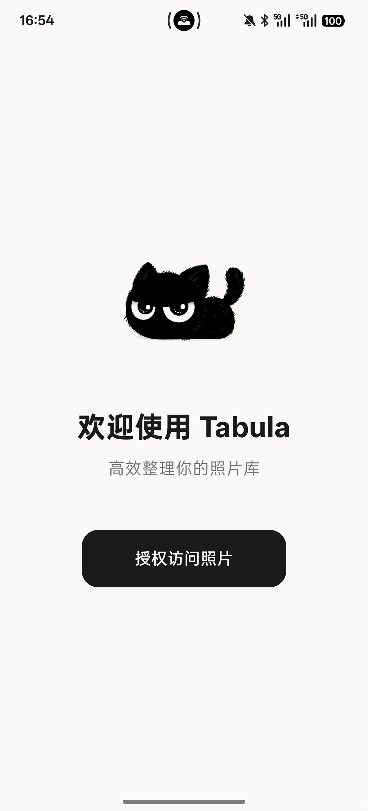
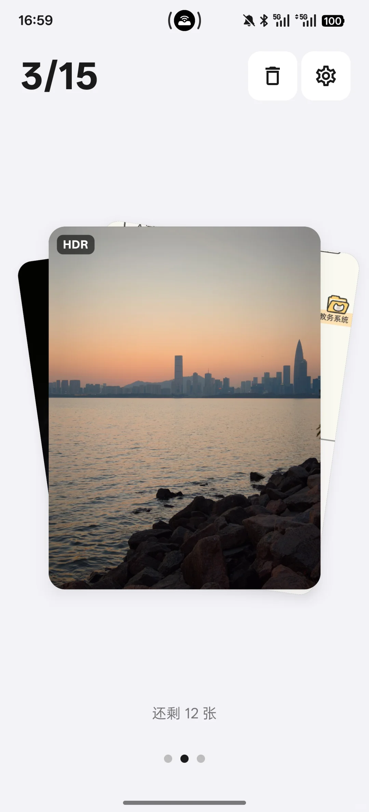

装了 Tabula 两周，我终于敢打开相册了
相册里存了四千多张照片，越积越不敢碰。装了 Tabula 之后，用了一种完全不一样的方式——每次只滑十几张，碎片时间就能清完一批，还从机制上防误删。
相册攒到四千多张的时候，我已经不敢点开系统相册了。不是照片有多好，是打开就焦虑——这么多，从哪下手？删掉吧又怕哪天突然想找那张去年聚餐拍的模糊大合照，犹豫两下又把手机扔一边了。
Tabula 就是在这种心态下被我翻到的——它的官网上定位很清楚，就是一个专门帮你整理安卓相册的应用，整个思路和我见过的清理工具都不太一样。装完打开第一眼，我就觉得"嗯，这玩意儿的作者肯定也被相册吓过"。
初印象：27.5MB，界面比我手机还干净
安装包从官方下载拿，不大，大概 27.5MB，三下两下装完。打开之后第一件事是请求访问照片的权限——这个当然要给，不然它没法干活。授权完直接进入主界面，就是一张卡片撑满屏幕，底部有个进度条显示当前是第几张、这一组还有多少。
说实话，我之前以为会看到一堆功能按钮、分类选项、设置入口什么的——毕竟清理照片怎么也得让我选选"只删重复的"或者"只清截图"吧？结果什么都没有，就一张卡片，等着我滑。

这让我有点意外，也有点好奇：就这？能管用？
核心体验：三种手势，把"整理"这件事拆碎了
真正上手之后才发现，Tabula 把整理相册这件事，压缩成了三个极其简单的手势：
- 左右滑 = 保留，照片不动
- 上滑 = 送入待删除空间（注意，不是直接删！）
- 下滑 = 归类进某个图集
就这三个动作，连按按钮都不需要。我第一次滑的时候是在地铁上，15 张一组的设置——结果整趟通勤滑了三组，眼睛都没抬几下。
上滑不直接删，这是我最庆幸的设计
用 Tabula 之前，我删照片的模式是：打开相册 → 选一批 → 删除 → 后悔 → 去回收站找 → 部分恢复。这个循环重复了无数次，尤其是手抖的时候。
Tabula 的做法是上滑的照片先进入待删除空间，而不是直接消失。这个改动看似简单，但完全改变了心理状态——上滑的时候我不用再纠结"万一删错了呢"，大胆往上划就是了。一组滑完，再集中翻待删除空间，把拿不准的还原回来，确认没问题了再送进回收站。
相当于两道闸门。待删除空间是第一道，回收站是第二道。我用到第八天的时候，有一次刷到一张前女友的照片下意识上滑了，过了两秒才反应过来，打开待删除空间一键还原——要是搁以前，要么犹豫半天不敢删，要么删完后悔半小时。

分组推送：把"四千张"重写成"十五张"
Tabula 不会一次性把整个相册砸给你，它切成小组推送——5、10、15、20、30 张一组可以选。我默认用 15 张，两三分钟滑完一组，结算的时候有个小动画，问我要不要再来一组。
这个设计听着像个小细节，但我后来在网上看到有人解释心理学原理：明确的小目标（滑完这 15 张）比模糊的大目标（清完四千张）驱动性强太多。确实如此——四千张我放了三个月没动，15 张我两分钟就滑完了，还主动点了"再来一组"。
桌面小组件：把动机钉在每天必看的地方
整理相册最难的从来不是操作，是想起来做。我装 Tabula 的第一周，每天能滑个两三组；第二周开始就懒了，打开频率明显下降。
直到我把 Tabula 的桌面小组件加上去。小组件不大，放在桌面第二屏，显示"已整理 XXX 张"。每天扫一眼，心里就动一下——今天要不要来一组？说不上来是虚荣还是习惯，但确实，看到那个数字在涨，就想再滑一组让它再涨点。
哪些地方还能再磨磨
说了好的，也说点真实感受。
第一次用的时候我没调设置，默认的 15 张刚好。但如果照片里 HDR 和 Live Photo 比较多，加载速度会比普通照片慢一点——Tabula 提供了 HDR 和 Live 显示的开关，关掉能更流畅，但画质会打折扣。我没关，宁愿等半秒，毕竟整理的时候看清细节才好决定去留。
还有一点，Tabula 的功能入口藏得比较深。比如想创建一个自定义图集、想按月份专项清理、想看数据统计，都得进到设置里翻。对于想快速上手的人来说可能无所谓，但用久了想玩花样，就得花点时间摸清楚各个功能在哪。后来去Tabula文档翻了一下才弄明白，进阶玩法我后面准备慢慢摸。
说句实在话：适合谁，不适合谁
如果你和我一样，相册已经积到几千张不敢碰，那 Tabula 绝对值得装。它不是帮你"自动"清理照片，而是帮你降低动手门槛——把一个令人焦虑的大工程，变成了一堆几分钟就能完成的小动作。
但如果你本来就有整理习惯，相册里保持得整整齐齐、没超过几百张，那可能没太大必要。Tabula 的核心价值就是"帮不敢碰的人敢碰"，已经在碰的人用不上这个杠杆。
还有一点我很在意：Tabula 宣称所有处理都是 100% 在本地完成的，不上传任何照片。这个对我来说是加分项——照片里有太多不想让任何服务器看到的东西。
用了两周，四千多张现在剩不到两千了。不是删了两千张，是真正"看过"了两千张——哪些要留、哪些可以走，心里终于有数了。
这种踏实感比手机省了多少空间更值。
顺手说一句，Tabula 的相关资料在三个开源平台都有备份——GitHub、Gitee、GitCode，国内访问哪个顺就用哪个。